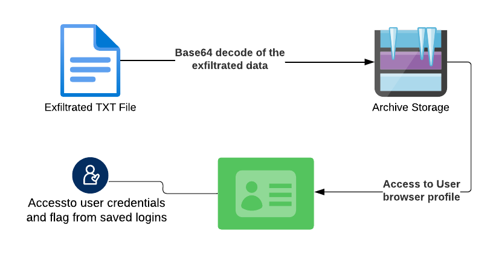
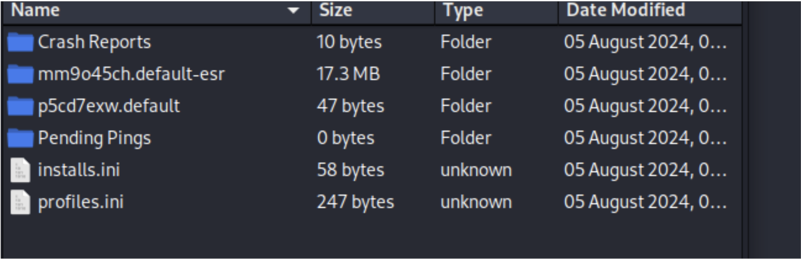
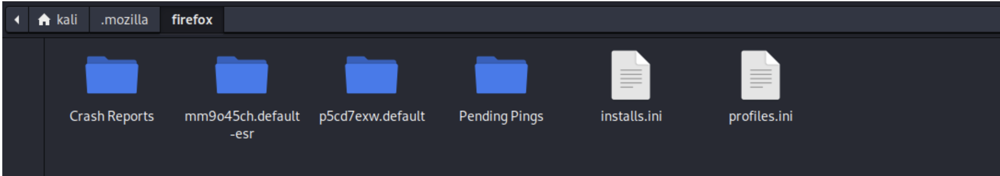
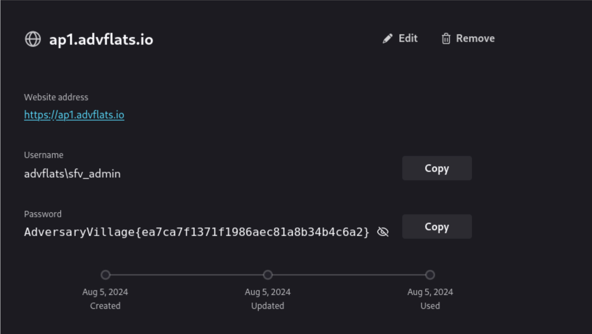

Flag: AdversaryVillage{ea7ca7f1371f1986aec81a8b34b4c6a2}
Description:
During a stealthy compromise on an internal server of Adversary City, the attacker managed
to siphon off user credentials through a covert C2 channel. The SOC team has recovered a single,
tantalizing clue: a text file extracted from the stolen data. Your mission is to delve into this file, unravel
the secrets it holds, and uncover the true extent of the breach. Can you piece together the puzzle and
reveal the hidden information? The security of Adversary City depends on your expertise!
Walkthrough:

- Convert the exfil.txt file provided with the challenge to zip file using base64 decoding using any of your favorite terminal.
- The ZIP file contains a Mozilla Firefox Browser profile that was exfiltrated by the APT group.

- Extract the zip file and replace the files in the Firefox profiles folder of your local machine.
Windows and Linux will have different locations to store the Mozilla user profiles.

- Now open Firefox to load the exfiltrated browser profile and check the data within the profile. Check the saved logons to find the final flag.
